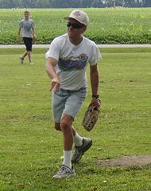
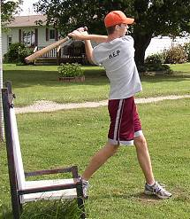
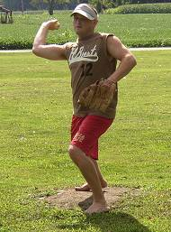
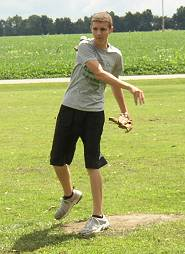

Tony Cork picked up
the win allowing 4 runs on 11 hits in 6 innings of work. He also led all
hitters with 8 hist in 15 at bats, drove in 3 runs and scored 5 times. |

Josh Hepner
had an RBI double and scored a run in the fourth inning in his team's defeat.
|

Ryan Tomlinson returned
to action for the first time since 2006 and suffered the loss on the mound.
Tomlinson allowed 7 runs (5 earned) while striking out 7 batters. |
|
Ryan Parker made his chair
baseball debut and went 6-for-14 with a triple and 2 RBI. |
Patrick Cork knocked in 3
of his team's 4 runs on the day. Cork was 7-for-13 with 3 solo homeruns. |

Austin Dart had a successful
debut on the mound and at the plate. Dart homered and drove in a pair of
runs and also pitched the final 2 innings to pick up the save. |